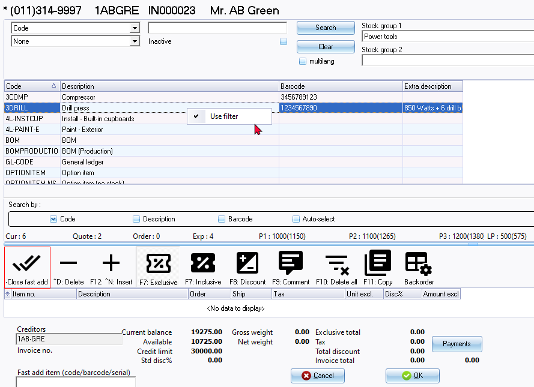

Item lookup - Fast add
When processing documents, you're required to choose the stock item within the document lines section. By default, only the active stock items are displayed. If a stock item is marked as inactive (disabled) on the Stock form, it won't appear in the Stock lookup. This ensures that only active or enabled items are available for selection in the documents.
If you need to select disabled items in documents, simply check the "Inactive" box and click the Search button. This action will include inactive or disabled stock items in the lookup results.
The +Open fast add - The icon will launch the lookup as a part of the "Document entry" screen (replace the header section of the document). Once finished selecting stock items, you may click on the -Close fast add icon.
The “+Open fast add - Stock lookup” screen is as follows:

|
|
You may enter a valid stock code, barcode or serial number and press the Enter key in the "Fast add item (stockcode / barcode/ serial)" field in the footer section of the "Document entry" screen. This will insert the stock transaction in the document line. |

|
|
Keyboard shortcuts:
|
The values and fields are as follows:
- Code - Code is the default option. You may select the Description, Barcode, Description and extra description or Code, Description and extra description option. This will allow you to enter any valid values for a stock item. If you click on the Search button, it will list only those stock items matching the value entered.
- Operator - None is the default. You may select an operator (i.e. "and" / "or"). These operators will add another field where you may enter values to filter the stock items. If you click on the Search button, it will list only those stock items matching the values entered in the first search values field and/or the values entered in the second search values field.
- Stock group 1 - You may select a stock group 1 (created / added in Groups (Stock group 1) (Setup ribbon) and linked to the stock item). This will only list those stock items linked to Stock group 1.
- Stock group 2 - You may select a stock group 2 (created / added in Groups (Stock group 2) (Setup ribbon) and linked to the stock item). This will only list those stock items linked to Stock group 2.
- Search by: Code, Description and Barcodes is the default options. If any of these are selected (ticked), it will change the sort sequence in which the stock items are listed.
|
|
The Auto-select tick box will only be displayed when the (right-click) is selected (ticked). The "Auto-select" option allows you to enter any keys to filter by stock code, description, barcode, etc. |
- Status bar - This bar is located right at the bottom of the "Lookup" screen. It will display the following details for the selected stock item:
- Cur: This displays the current actual quantities on hand for the selected stock item. This is the totals of the "Quantity on hand" field of the Values section on the Ledger tab of Stock items (Default ribbon) (as updated by posted documents) plus any unposted purchase documents.
- Quote: This displays the quantities of any open / unconfirmed quotes which have not yet been converted to invoices.
- Order: This displays the quantities of any open / unconfirmed orders which have not yet been converted to purchase documents.
- Exp: This displays the expected quantities on hand for the selected stock item. This is the current quantities on hand for the selected stock item. This is the totals of the "Quantity on hand" field of the Values section on the Ledger tab of the Ledger tab of Stock items (Default ribbon) MINUS the quantities of any open / unconfirmed quotes which have not yet been converted to invoices PLUS the quantities of any open / unconfirmed orders which have not yet been converted to purchase documents.
- P1: This displays the "Selling price 1" field of the Selling prices section on the Ledger tab of Stock items (Default ribbon). The price is displayed as exclusive of tax (VAT/GST/Sales tax) and the price is displayed as inclusive of tax (VAT/GST/Sales tax) between brackets.
- P2: This displays the "Selling price 2" field of the Selling prices section on the Ledger tab of Stock items screen (Default ribbon). The price is displayed as exclusive of tax (VAT/GST/Sales tax) and the price is displayed as inclusive of tax (VAT/GST/Sales tax) between brackets.
- P3: This displays the "Selling price 3" field of the Selling prices section on the Ledger tab of Stock items (Default ribbon). The price is displayed as exclusive of tax (VAT/GST/Sales tax) and the price is displayed as inclusive of tax (VAT/GST/Sales tax) between brackets.
- LP: This displays the "Latest cost" (last cost price) field of the Values section on the Ledger tab of Stock items (Default ribbon). The price is displayed as exclusive of tax (VAT/GST/Sales tax) and the price is displayed as inclusive of tax (VAT/GST/Sales tax) between brackets.
|
|
The following options is not available on the Stock lookup in when selecting stock items on Reports:
|